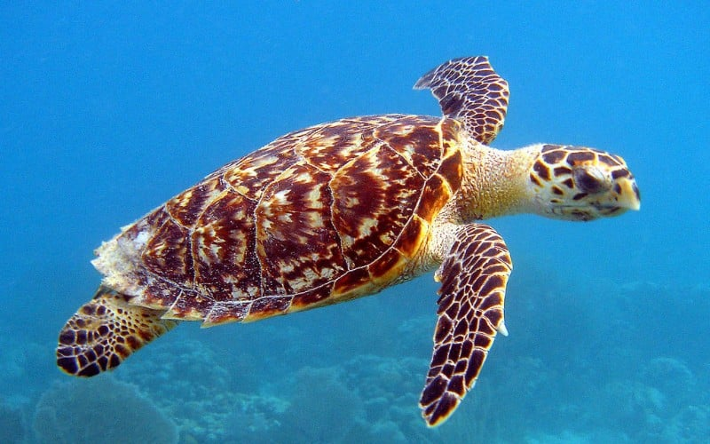
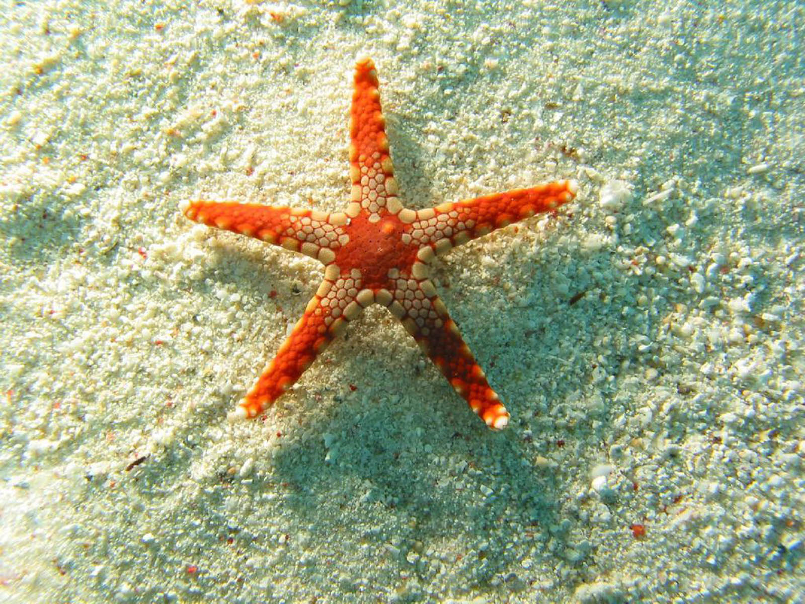

Penyu atau katung adalah kura-kura laut yang ditemukan di semua samudra di dunia. Penyu sudah ada sejak akhir zaman Kapur atau seusia dengan dinosaurus.

Tripang, yang juga dikenal sebagai teripang atau sea cucumber, adalah hewan laut yang termasuk dalam kelas Holothuroidea, bagian dari filum Echinodermata—kelompok yang sama dengan bintang laut dan bulu babi.

Ikan sarden adalah nama umum untuk berbagai jenis ikan kecil dari famili Clupeidae, yang juga mencakup ikan herring.

Bintang laut, atau starfish, adalah hewan laut yang termasuk dalam filum Echinodermata dan kelas Asteroidea.